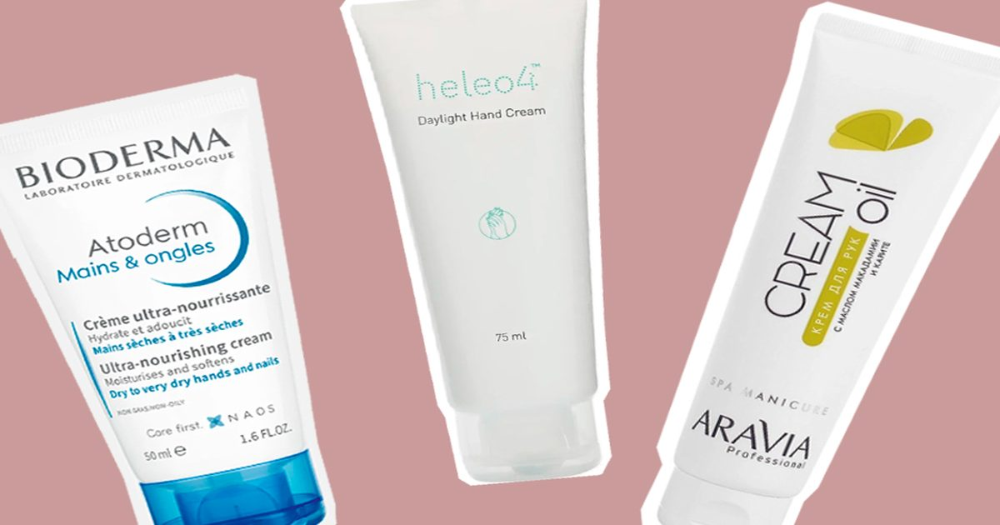

Кремы для рук, которые спасают осенью
Дома — отопление, на улице — ветер.
Поэтому каждую осень руки у нас сами тянутся…
да, к кремам для рук-) Собрали самые правильные — те, которые быстро впитываются, классно пахнут и просто радуют.
И среди них есть те, что стоят 200 рублей.
Крем для рук Atoderm, Bioderma «Аптечный крем с кайфовой текстурой и — даже …
The post Кремы для рук, которые спасают осенью first appeared on Beauty Insider.